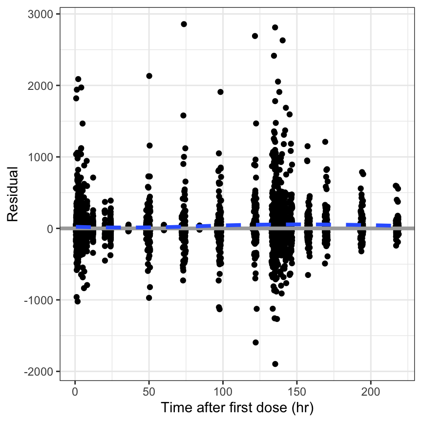
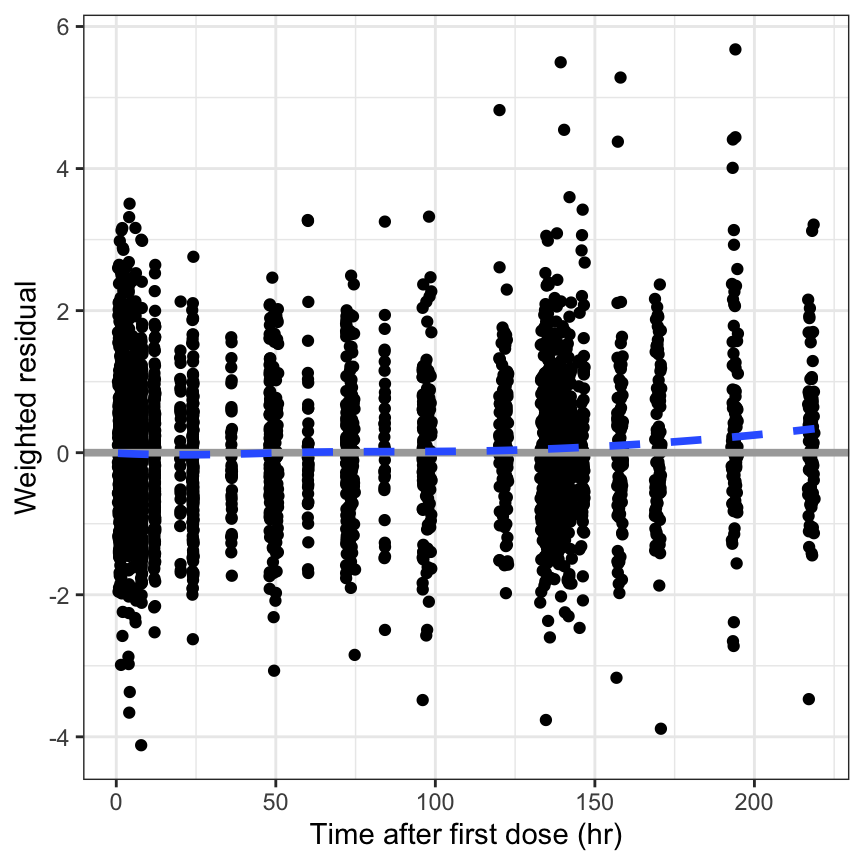
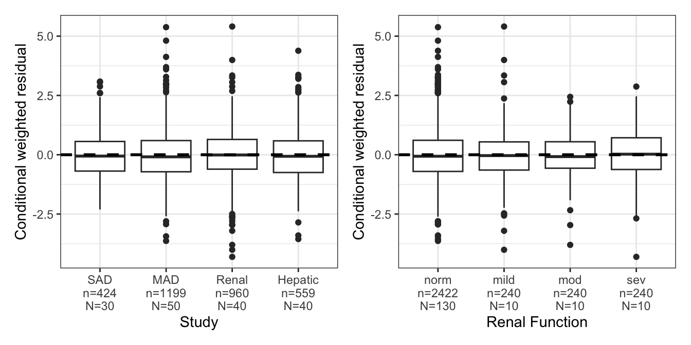
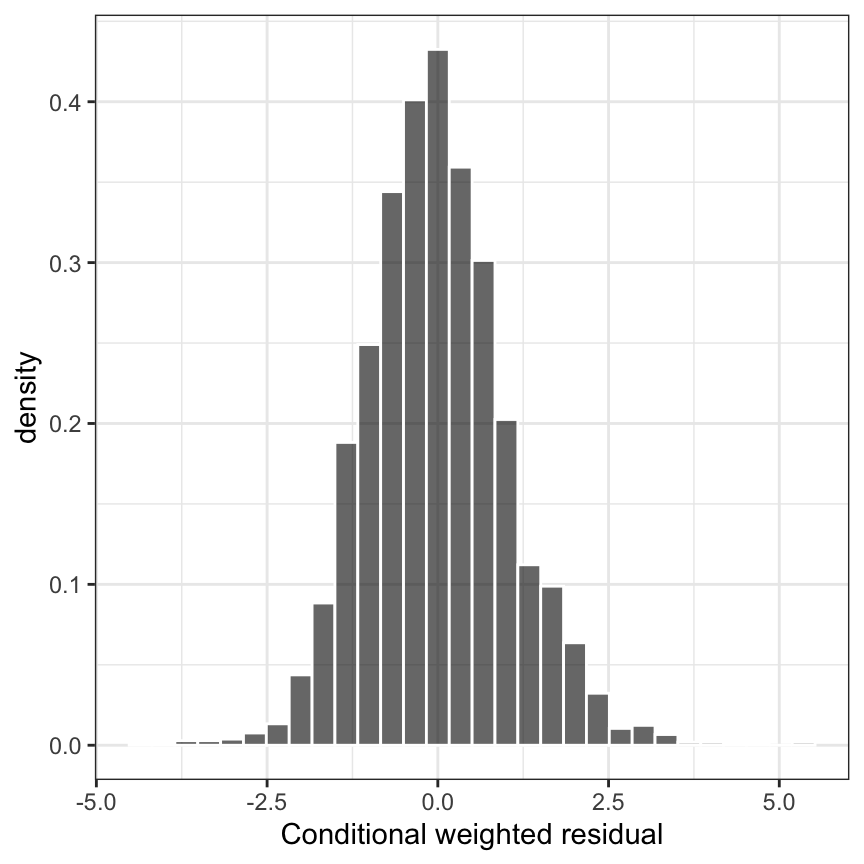

res_time(df)5.1 Residuals
5.1.1 Versus TIME [res_time]
5.1.2 Versus TAFD [res_tafd]
res_tafd(df)
5.1.3 Versus TAD [res_tad]
res_tad(df)
5.1.4 Versus PRED [res_pred]
res_pred(df)
5.1.5 Versus continuous [res_cont]
res_cont(df, x = "WT//Weight (kg)")
This function is also vectorized in x.
res_cont(df, c("WT", "CRCL", "AST")) %>%
pm_grid()
5.1.6 By categorical [res_cat]
dplyr::count(df, STUDYc)# A tibble: 4 × 2
STUDYc n
<fct> <int>
1 SAD 424
2 MAD 1199
3 Renal 960
4 Hepatic 559res_cat(df, x = "STUDYc//Study type")5.1.7 Histogram [res_hist]
res_hist(df)
5.2 WRES
5.2.1 Versus TIME [wres_time]
wres_time(df) 
5.2.2 Versus TAFD [wres_tafd]
wres_tafd(df)
5.2.3 Versus TAD [wres_tad]
wres_tad(df)5.2.4 Versus PRED [wres_pred]
wres_pred(df)
5.2.5 Versus continuous [wres_cont]
This function is also vectorized in x.
wres_cont(df, x = "WT//Weight (kg)")5.2.6 By categorical [wres_cat]
wres_cat(df, x = "STUDYc//Study type")
5.2.7 Histogram [wres_hist]
wres_hist(df)
5.2.8 QQ plot [wres_q]
wres_q(df)
5.3 CWRES
5.3.1 Versus TINE [cwres_time]
cwres_time(df)5.3.2 Versus TAFD [cwres_tafd]
cwres_tafd(df)
5.3.3 Versus TAD [cwres_tad]
cwres_tad(df)5.3.4 Versus continuous [cwres_cont]
cwres_cont(df, x = "WT//Weight (kg)")
Vectorized version
cwres_cont(df, covs) %>%
pm_grid(ncol=2)
5.3.5 By categorical [cwres_cat]
cwres_cat(df, x = "STUDYc//Study type") 
cwres_cat(
df,
x = "STUDYc//Study type",
shown = FALSE
)
Vectorized version
cwres_cat(
df,
x = c("STUDYc//Study", "RF//Renal Function")
) %>% pm_grid()
5.3.6 Histogram [cwres_hist]
cwres_hist(df)
5.3.7 Versus PRED [cwres_pred]
cwres_pred(df)
5.3.8 QQ plot [cwres_q]
cwres_q(df)